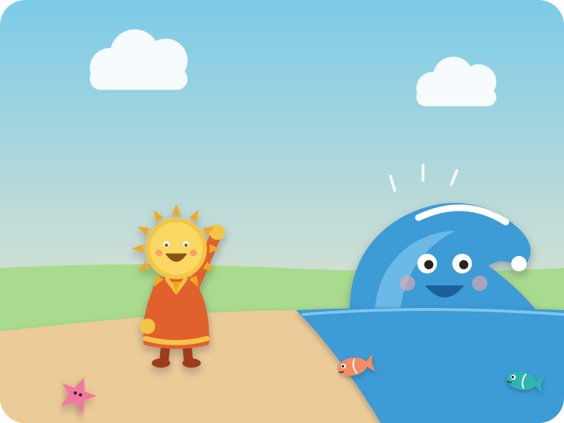
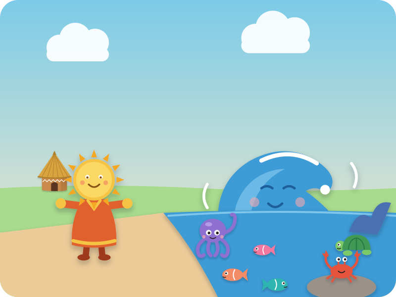
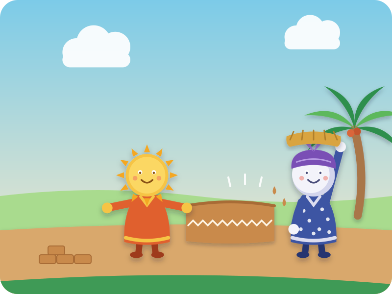
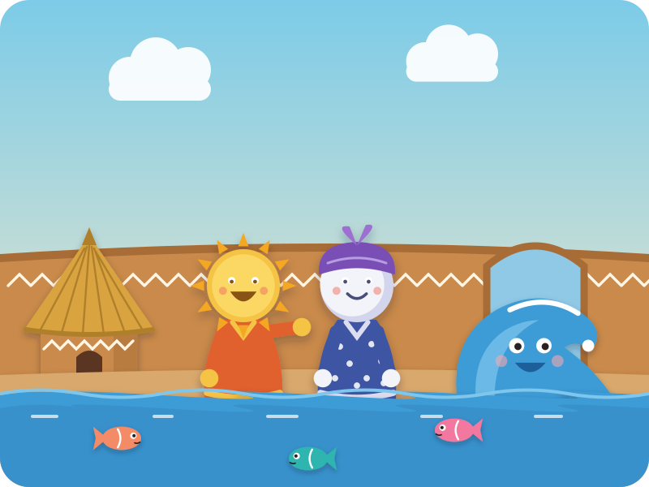
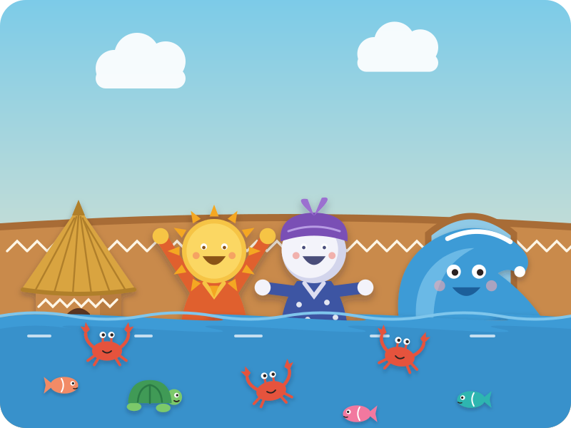
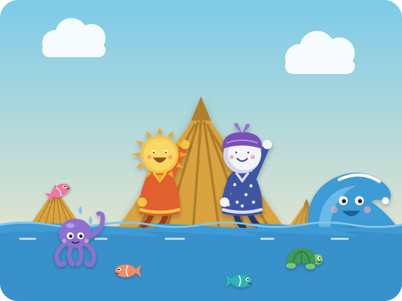
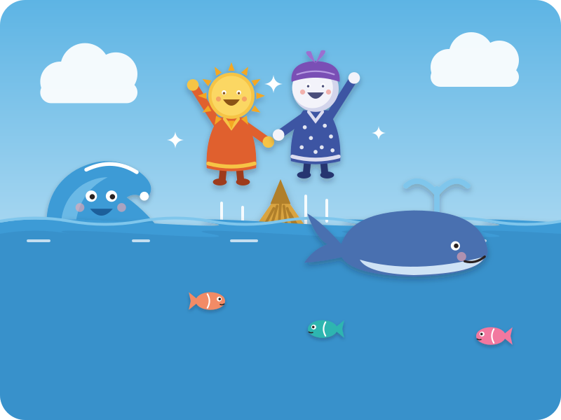
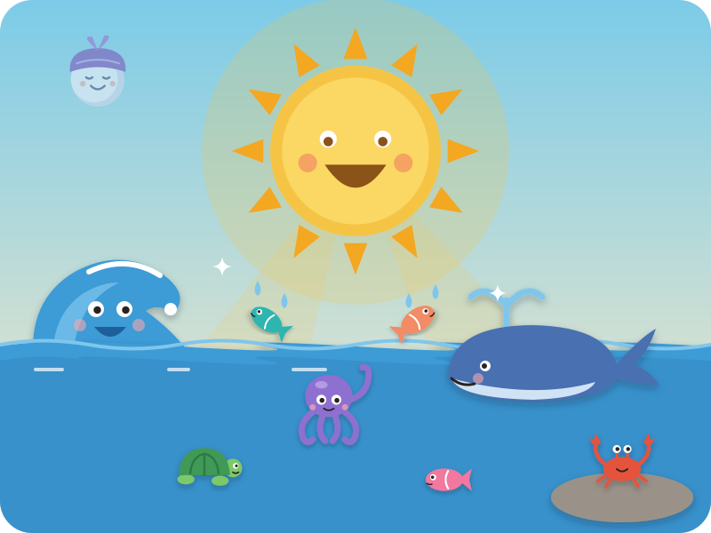

A folk tale from Nigeria
Why the Sun and the Moon Live in the Sky
"Story, story — are your ears open?" Kai: "Open!"
Long, long ago, the Sun and his wife, the Moon, did not live up in the sky.
They lived down here on the earth, in a little round house with a grassy roof.

Sun had a very good friend: Water. Every day, Sun walked down to the sea to visit him.
"Hello, friend Water!" — and Water waved back with a big wet wave.
Splish, splash! Kai splashes his hands

"Friend Water," said Sun, "why don't you ever come to visit us?"
Water shook his head, very kindly. "Your house isn't big enough. I have so many people!"
And out peeked fish, an octopus, a turtle, a crab… even a whale!

So Sun went home to Moon. "Let's build a big, big house — big enough for Water and all his people!"
Sun made the round mud walls: pat, pat, pat! Kai pats his knees
And Moon brought golden grass for the roofs.
At last it was ready: a great big compound, with round houses, a round wall, and a wide, wide gate.
"Friend Water!" they called. "Come and visit us!"

At the gate, Water called: "Friend Sun, can my people come in?" "Yes, come in!" Kai answers
In swam the fish — one, two, three! Up to their knees. show your knees

"Friend Sun, can my people come in?" — "Yes, come in!"
In scuttled the crabs — one, two, three — and a slow green turtle.
Now the water was up to their tummies! pat your tummy

"Friend Sun, can my people come in?" — "Yes, come in!"
In came the octopus. Up came the water — to their heads! hands on your head So Sun and Moon climbed onto the roof.

"Friend Sun — can my biggest person come in?" — "Yes… come in!"
In came the whale. Whoooosh! The water rose up over the roof.
So Sun and Moon held hands, and floated up, up, up… into the sky.
Up in the sky, Sun and Moon sat on soft clouds and looked down.
"Oh, look!" said Moon. "From up here we can see everybody."
"And we can shine on everybody," smiled Sun. And they liked that very much.

And that is where they live to this day.
All day long, Sun shines warm and golden, and down below Water and all his people play.
Splish, splash, splosh! Kai splashes
And at night, when Sun goes to rest, Moon shines soft and silver over the sleepy sea — over the fish, the whale, Water… and you.
"Goodnight, Moon!" Kai waves goodnight
The End
"Snip, snap, snout — this tale's told out."
Swipe back to read it again
Driving? Tell it without the page · six beats
The picture book is for home, bedtime, or a passenger. In the car, tell it from memory — bold is Kai's part.
- Long ago, Sun and his wife Moon lived on the earth, in a little round house.
- Sun visits his friend Water every day — splish, splash! — but Water says, "Your house isn't big enough for my people."
- So Sun and Moon build a great big compound — pat, pat, pat! — and invite Water.
- Water comes with all his people: "Friend Sun, can my people come in?" — "Yes, come in!" Three fish, three crabs and a turtle, an octopus, a whale — count them!
- The water rises: up to their knees, their tummies, their heads — so they climb onto the roof, then float up into the sky.
- Now Sun shines on everybody by day, Moon shines by night, and Water's people splash below — "Goodnight, Moon!"
After the story · car-friendly wondering
"How high did the water go? Show me with your hands!"
"If you built a big, big house, who would you invite?"
"When you see the Moon tonight, what will you say to her?"
Where this story comes from
This is a folk tale from southeastern Nigeria, often credited to the Efik and Ibibio peoples. It is best known in English from Elphinstone Dayrell's collection Folk Stories from Southern Nigeria (1910), and from the 1968 picture book Why the Sun and the Moon Live in the Sky, which uses Dayrell's text, illustrated by Blair Lent — a 1969 Caldecott Honor book. In the old telling, Sun asks Water why he never visits; Water says the house is too small for his people, so Sun and his wife Moon build a huge compound. When Water arrives he keeps asking whether it is still safe to come in, and Sun and Moon, not wanting to be rude to a guest, keep saying yes — until the water is over the roof and they have to go up into the sky. This retelling is our own, for a 4-year-old: we changed Water's question to a call-and-answer Kai can join in, chose which sea creatures come in so they can be counted, and ended on Sun and Moon being glad to shine on everybody. The robes, the Moon's headwrap and the round thatched compound are our picture-book choices, not details from the tale.